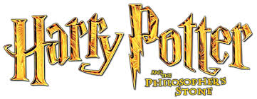
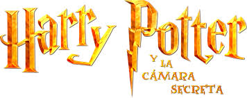
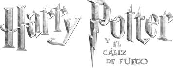
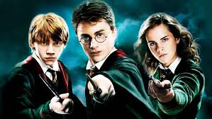
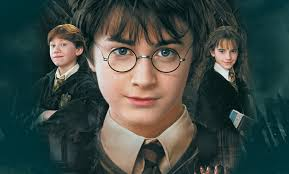

Harry Potter es una serie de novelas fantásticas escrita por la autora británica J. K. Rowling, en la que se describen las aventuras del joven aprendiz de magia y hechicería Harry Potter y sus amigos Hermione Granger y Ron Weasley, durante los años que pasan en el Colegio Hogwarts de Magia y Hechicería.
A la edad de once años, Harry descubre que es un mago. Comienza a asistir a Hogwarts y es seleccionado en la Casa de Gryffindor. Se convierte en el mejor amigo de Ron Weasley y Hermione Granger y en el jugador de Quidditch más joven en más de un siglo. Se hace aún más conocido en sus primeros años tras proteger la piedra filosofal que queria ser optenida por lord Voldemort (Su principal enemigo) y salvar a Ginny Weasley de la Cámara de los Secretos. En su cuarto año, gana el Torneo de los Tres Magos, aunque la competencia termina en tragedia con la muerte de Cedric Diggory y el regreso de Lord Voldemort. En el siguiente año escolar, Harry funda el Ejército de Dumbledore y lucha en la Batalla del Departamento de Misterios, durante la cual pierde a su padrino, que era como un padre para él.
Harry desempeña un papel importante en muchas otras batallas de la Segunda Guerra Mágica. Durante la Batalla de Hogwarts, se encuentra con Voldemort y se sacrifica a sí mismo, aunque no muere, sino que se bate en duelo contra Voldemort por última vez y lo derrota.
Después de la guerra, se convierte en auror y se casa con Ginny Weasley, con quien tiene tres hijos: James Sirius, Albus Severus y Lily Luna. Es el padrino de Teddy Remus Lupin. En 2007, Harry es ascendido a jefe de la Oficina de Aurores a la edad de 26 años y ocasionalmente daba clases de Defensa Contra las Artes Oscuras en Hogwarts. En el verano del 2020 fue ascendido al jefe del Departamento de Seguridad Mágica.
................................................................................................
................................................................................................
Harry James Potter es un mago de sangre mestiza y el único hijo de James y Lily Potter. Es la única persona conocida que ha sobrevivido a la maldición de Avada Kedavra, haciéndolo en dos ocasiones. Ambas veces la maldición fue conjurada por Lord Voldemort. La primera, en un intento de matar a Harry de bebé, conlleva la primera derrota de Voldemort y al final de la Primera Guerra Mágica. La segunda, (en la que a diferencia de la primera Voldemort logra matarlo efectivamente pero luego el niño revive) destruye una parte más del alma de Voldemort y lleva a su destrucción definitiva y al final de la Segunda Guerra Mágica.
Harry es también notable por ser el único Señor de la Muerte que se conoce, después de haber unido las tres Reliquias de la muerte. Paradójicamente, es pariente de Lord Voldemort, al ser este descendiente de Cadmus Peverell y Harry de Ignotus Peverell. Según un epílogo alternativo que filtraron escrito por J.K. Rowling, Harry tiene 150 años y es director de Hogwarts y tiene un tataranieto llamado Tom, como Tom Ryddle (podría ser que se llamara Tom Potter).
Harry Potter, un niño huérfano que vive con sus crueles parientes, los Dursley, descubre en su undécimo cumpleaños que es un mago. Es invitado a asistir a la Escuela de Magia y Hechicería de Hogwarts, donde conoce a sus mejores amigos, Ron Weasley y Hermione Granger. Juntos, enfrentan desafíos y peligros mientras investigan un misterio relacionado con la Piedra Filosofal, que otorga la vida eterna. Descubren que el profesor Severus Snape está intentando robar la piedra para ayudar a Voldemort a volver a la vida. Con valentía, Harry y sus amigos se enfrentan a obstáculos y protegen la piedra, evitando que caiga en manos equivocadas.
En su segundo año en Hogwarts, Harry se entera de la existencia de una Cámara Secreta y de un misterioso ser que aterroriza a los estudiantes. Descubre que él puede hablar con las serpientes, lo que lo vincula a la leyenda del Heredero de Slytherin. Harry, Ron y Hermione investigan el origen de la cámara y descubren que fue abierta por Lord Voldemort cuando era estudiante. El diario de Tom Riddle, que Ginny Weasley ha estado usando, resulta ser un horrocrux, un objeto que contiene parte del alma de Voldemort. Juntos, luchan contra el basilisco y logran derrotar a Riddle, salvando a Ginny y cerrando la Cámara Secreta.
En su tercer año en Hogwarts, Harry se entera de que un peligroso convicto, Sirius Black, ha escapado de la prisión de Azkaban y está buscándolo. Durante el año escolar, Harry se enfrenta a los Dementores, guardianes de Azkaban que se sienten atraídos por sus recuerdos oscuros. Descubre que su nuevo profesor de Defensa contra las Artes Oscuras, Remus Lupin, es un hombre lobo y aprende a conjurar un Patronus para protegerse de los Dementores. Finalmente, Harry descubre que Sirius Black es inocente y que Peter Pettigrew, quien había estado viviendo como una rata llamada Scabbers, es el verdadero traidor. Harry salva a Sirius y se entera de que es su padrino.
En su cuarto año en Hogwarts, Harry es seleccionado para participar en el Torneo de los Tres Magos, una competencia peligrosa entre las tres escuelas de magia más importantes. A pesar de que solo deberían participar magos mayores de 17 años, Harry es elegido por el Cáliz de Fuego misteriosamente. Durante el torneo, Harry enfrenta desafíos mortales, como un dragón y un lago lleno de criaturas peligrosas. Sin embargo, los verdaderos peligros están ocultos detrás de escena. Barty Crouch Jr., disfrazado como el profesor Alastor Moody, ha estado manipulando el torneo para ayudar a Voldemort a regresar. Harry es llevado al cementerio donde se realiza un oscuro ritual para devolver a Voldemort a su forma física. Más adelante, Harry escapa y se enfrenta a Voldemort, logrando escapar nuevamente. Esta experiencia marca el regreso oficial de Voldemort y señala tiempos oscuros que se avecinan.
En su quinto año en Hogwarts, Harry se enfrenta a la negación del Ministerio de Magia sobre el regreso de Lord Voldemort. El Ministerio ha instalado a Dolores Umbridge como profesora de Defensa contra las Artes Oscuras, quien impone un régimen opresivo en la escuela. Harry se une a un grupo secreto llamado el Ejército de Dumbledore, liderado por Hermione y Ron, para aprender a defenderse contra las artes oscuras. Juntos, luchan contra los seguidores de Voldemort y se preparan para la batalla final. Harry descubre que Voldemort está buscando un objeto llamado la Profecía, que revela su destino y el de Voldemor
En su sexto año en Hogwarts, Harry recibe un antiguo libro de texto de Pociones perteneciente a un misterioso príncipe mestizo. El libro contiene anotaciones y hechizos que ayudan a Harry a sobresalir en sus clases. Mientras tanto, Dumbledore comienza a enseñarle a Harry sobre el pasado de Voldemort y su búsqueda de la inmortalidad. Harry descubre que Voldemort ha dividido su alma en varios horrocruxes para asegurar su supervivencia. Harry y Dumbledore se embarcan en una peligrosa misión para encontrar y destruir los horrocruxes, pero su viaje termina trágicamente con la muerte de Dumbledore a manos de Severus Snape.
En su séptimo año en Hogwarts, Harry, Ron y Hermione deciden no regresar a la escuela y en su lugar buscar los horrocruxes restantes para destruir a Voldemort. Se embarcan en una peligrosa aventura llena de obstáculos y sacrificios. Descubren que las Reliquias de la Muerte, una varita invencible, una piedra de la resurrección y una capa de invisibilidad, pueden ayudarlos en su misión. Mientras tanto, Voldemort se hace cada vez más poderoso y el mundo mágico se sumerge en la oscuridad. La película termina con la captura de los protagonistas y el descubrimiento de que uno de los horrocruxes estaba más cerca de ellos de lo que pensaban.
En la emocionante conclusión de la saga, Harry, Ron y Hermione continúan su búsqueda de los horrocruxes restantes y se enfrentan a peligros mortales. Regresan a Hogwarts, que ahora está bajo el control de Voldemort y sus seguidores. La batalla final se desata entre las fuerzas del bien y las fuerzas del mal. Harry descubre que él es el verdadero dueño de la Varita de Saúco y se enfrenta a Voldemort en un duelo épico. Con la ayuda de sus amigos y aliados, Harry logra derrotar a Voldemort y poner fin a su reinado de terror. Después de la batalla, Harry destruye los horrocruxes restantes y el mundo mágico encuentra la paz una vez más.
En este apartado se va a explicar cuales eran las caracteristicas de cada una de las casas de Hogwarts.
Leer más--------------------------------------------------------------------------------------------------------------------------------------------------------------------------
En este apartado se va a explicar cual era el papel de cada uno de los personajes en la historia de Harry Potter.
Leer más-------------------------------------------------------------------------------------
En este apartado se va a explicar mas a fondo los personajes principales y personajes secundarios en la historia de Harry Potter.
Leer más-------------------------------------------------------------------------------------
En este apartado se van a encontar los actores que interpretaron a los personajes en la historia de Harry Potter.
Leer más
J. K. Rowling (Escritora británica)
Joanne Rowling, quien escribe bajo los seudónimos de J. K. Rowling y Robert Galbraith, es una escritora, productora de cine y guionista británica, es conocida principalmente por su serie de libros juveniles protagonizados por Harry Potter, verdadero fenómeno literario a nivel mundial que ha conseguido vender más de 500 millones de ejemplares, siendo traducida a más de 20 idiomas.